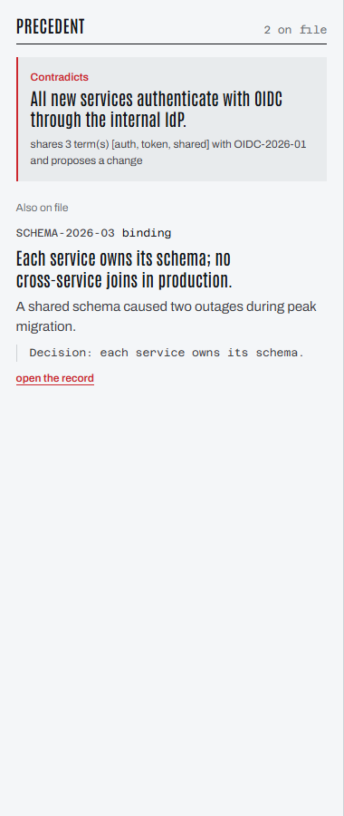
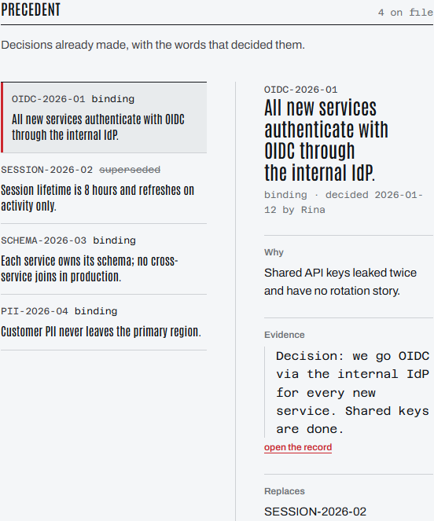

Firms do not lose knowledge. They lose the reason.
AUTH-142 Replace session tokens with shared API keys
Contradicts a binding decision
All new services authenticate with OIDC through the internal IdP.
Printed before the branch is cut.

A verdict where the work happens.
- Binding only. A superseded decision is never cited as current.
- Quote and link. The reader checks the sentence in place, in one click.
- Quiet when nothing applies. A panel that always speaks gets closed.
The agent answers with the record.
Check precedent for AUTH-142
CONTRADICTS PRECEDENT: shares auth, token and shared with OIDC-2026-01 - OIDC-2026-01 [binding] All new services authenticate with OIDC through the internal IdP. decided 2026-03-11 by Rina
A case file, not a wiki.
Every record carries its id, decider, date, quote and source link. Replacements stay visible as a chain.

Deterministic on purpose.
No model runs inside the app. Matching is keyword and scope comparison you can read in the source, so every verdict is reproducible.
Reasoning belongs to the agent. Bookkeeping belongs here.
- Platform
- Forge, Jira Cloud, nodejs24.x runtime
- Modules
- jira:issuePanel, jira:globalPage, rovo:agent, rovo:mcp
- Agent tools
- check_precedent, find_decision, record_decision, list_decision_chain
- Scopes
- read:jira-work, storage:app